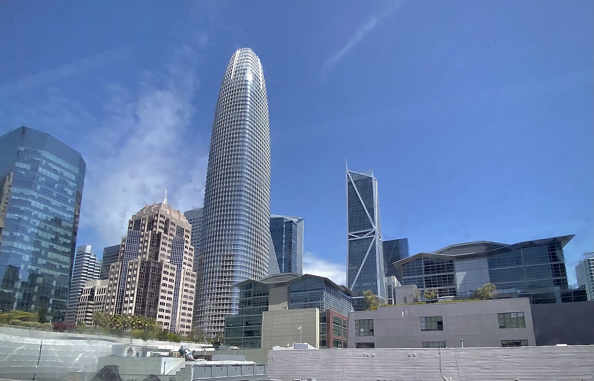
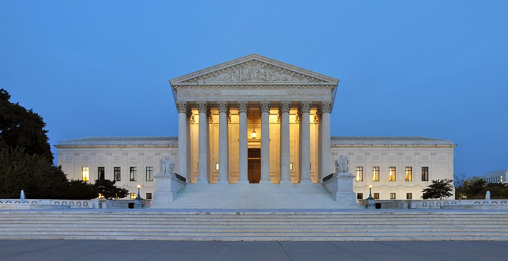
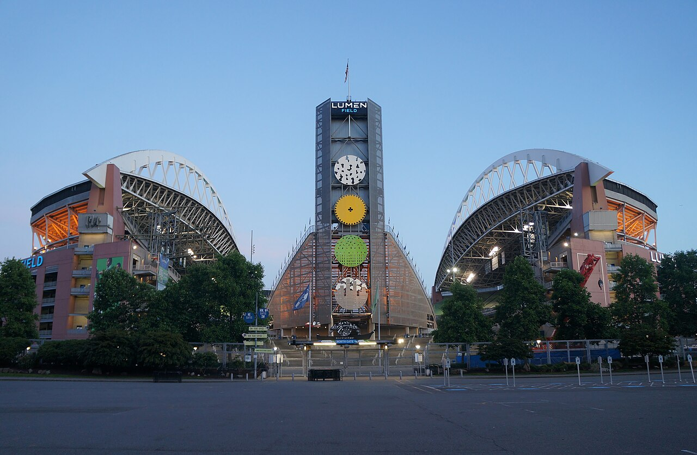

Vol. I · No. 98 · Thursday, August 27, 2026 · 15 items · ~15 min read
Nvidia sold ninety-six billion dollars of compute in a quarter and then told the market that memory chips, not customers, now set its margin.
Markets & AI · Santa Clara
Nvidia doubles again to $96.2 billion, then tells the market that memory now sets the margin
Nvidia's Santa Clara headquarters. The company reported second-quarter fiscal 2027 results after the close on Wednesday. — Wikimedia Commons
Nvidia reported revenue of $96.2 billion for the quarter ended July 26, up 106 percent from a year earlier and 18 percent from the prior quarter, and guided the current quarter to $108.0 billion plus or minus 2 percent, roughly $4 billion above consensus. Data Center revenue was $89.0 billion, up 117 percent year over year, and grew faster still, up 138 percent. Non-GAAP earnings were $2.22 a share against $1.05 a year ago. Gross margin in the quarter came in at 75.0 percent, up from 72.7 percent.
The number that moved the stock was the one going the other way. Nvidia guided gross margin down to about 74.0 percent for the current quarter and signalled further compression after that, and chief financial officer put the cause on component costs, describing memory pricing conditions as extreme and worse than the company had assumed. Reuters reported last week that Nvidia had already told customers some AI-server systems shipping in early 2027 could carry price increases above 15 percent, largely on memory. Shares extended an after-hours decline of about 1.3 percent in the half hour before the call, on a day the S&P 500 had closed fractionally lower at 7,675.
The structural point is that Nvidia has found an input it does not control. It designs its accelerators and has TSMC fabricate them, but is bought from three suppliers in a cyclical market, and a DRAM upcycle now lands in gross margin rather than in someone else's. Chief executive Jensen Huang answered on volume instead, telling the call that compute has become revenue and that the buildout is no longer driven by a single lab. Nvidia also broke its own convention of guiding one quarter at a time, pointing per CNBC to roughly 70 percent revenue growth in , well above estimates.
"Now, compute is revenue. And demand is accelerating."
— Jensen Huang, founder and chief executive, Nvidia, August 26
Law · Oakland
Meta settles 29 states' teen-safety case mid-trial for up to $16.68 billion and ten years of outside audits
Meta agreed on Wednesday to pay up to $16.68 billion to resolve claims by 29 states that it engineered Facebook and Instagram to addict minors, misrepresented the platforms' safety, and collected data from children under 13. The deal was reached during a federal trial in Oakland before . California attorney general Rob Bonta led the litigation with counterparts from Colorado, New Jersey and Kentucky. Meta denied wrongdoing.
The injunctive terms will outlast the money. Subject to court approval, Meta will impose default daily usage limits and overnight access blocks on teen accounts nationwide, strengthen age-assurance systems, expand parental controls, and submit to . Bonta said Meta had agreed to changes that would take effect "within months." The figure is a ceiling: is doing real work in the announcement, and reported totals ranged from $16.68 billion to a rounded $16.7 billion across outlets.
The World · Washington · cross-spectrum LLCLRR
The Saudi nuclear pact sent to Congress leaves an enrichment pathway open
The administration transmitted its civil nuclear cooperation agreement with Saudi Arabia to Capitol Hill on Monday under of the Atomic Energy Act, and reporting on Wednesday established what the text actually contains. It carries no permanent prohibition on enrichment or reprocessing. It instead contemplates a United States built and operated enrichment facility on Saudi soil, subject to a two-year feasibility study. President Trump has said publicly that there will be no enrichment of material, a commitment the transmitted document does not codify.
Congress has 90 days of session to review, after which the agreement enters into force unless both chambers vote it down. Trump has also said the deal is contingent on Riyadh joining the , but no such condition appears in the agreement itself. Senator Ed Markey has said the administration is conceding on nonproliferation. The commercial effect is to hand American vendors a central role in Saudi nuclear construction while shutting out Chinese, Russian and South Korean competition.
Framing noteCNN led on the document, headlining that the administration sent a deal "that includes enrichment pathway to Congress." Fox News led on the leverage, headlining that Trump says Saudi Arabia "must join Abraham Accords for nuclear deal," and reported the no-enrichment pledge as the operative fact rather than as a claim the text does not support. No L-tier coverage was found on the Wednesday beat.
Artificial Intelligence
Salesforce lends a rival its own suffix, and legal AI fails to repeat itself
AI · San Francisco
Salesforce puts its customer records inside Claude and calls it Claudeforce

Salesforce Tower, San Francisco. The company disclosed the Anthropic partnership alongside second-quarter results. — Wikimedia Commons
Salesforce and Anthropic announced Claudeforce on Wednesday, a plugin carrying 37 pre-built sales skills that lets a Claude user compose emails, update records and take actions against customer data held in Salesforce. It is in pilot now with an open preview expected in September. The naming is the tell: Salesforce has attached its "force" suffix to its own products for two decades, and this is reportedly the first time it has lent the suffix to another company's.
Marc Benioff used the launch to answer the bear case directly, calling the narrative nonsense and arguing that models depend on the data, business context and workflows the platform holds. The direction of the integration undercuts him slightly. Salesforce already ships , its own agent layer; Claudeforce runs the other way, putting the system of record inside a rival's interface. Anthropic's framing emphasised , which is where governed data access is worth paying for.
AI · London
Legal AI agrees with itself on recall and contradicts itself on analysis
Artificial Lawyer published a piece on Wednesday arguing that the binding constraint on legal AI is not accuracy but reproducibility, and that the profession has no answer for month six, after the model has been updated twice and the person who wrote the prompt has left the firm. The empirical spine, drawn from a test of four frontier models across roughly 12,000 runs and written up by the National Law Review, is an inversion: knowledge and recall tasks were 97 to 100 percent consistent, legal analysis tasks 17 to 61 percent, and research tasks below 26 percent.
Consistency is therefore highest exactly where a lawyer needs the least help and collapses where the help is worth paying for. The mechanism is not a defect to be patched. Frontier models sample at a nonzero by design, and even greedy decoding is not reproducible run to run because of in batched GPU inference. Separately, providers can swap the weights behind a stable model name, so a workflow validated in January may be running materially different software in June with nothing in the audit trail to show it.
Markets & Deals
The belly of the curve clears at 4.393%, DAZN buys the bars, and Miami's women's league doubles
Rates · Washington
Treasury clears $70 billion of five-year notes at 4.393% with the long end still above five
The Treasury building, Washington. Wednesday's five-year note sale was the second leg of the week's coupon supply. — Wikimedia Commons
Treasury sold $70 billion of five-year notes on Wednesday at a high yield of 4.393 percent with a ratio of 2.37. The ten-year rose two basis points on the day to 4.66 percent. The thirty-year, which touched 5.323 percent on August 18, the highest since 2007, was quoted at 5.23 percent earlier in the week and has not come back to the four handle. Against Monday's two-year stop at 4.204 percent, that leaves roughly a hundred basis points of slope between twos and thirties.
The five-year is the maturity where the curve prices policy rather than fiscal risk, which makes Wednesday's clearing level the cleaner read of the two. It came a week after Treasury doubled the size of its long-end and pulled yields off multi-decade highs, an intervention aimed squarely at the thirty-year rather than at the belly. One caveat, stated plainly: the auction's could not be confirmed against the when-issued print, so the headline yield here carries no verdict on concession.
Media M&A · London
DAZN buys EverPass and with it the exclusive commercial rights to NFL Sunday Ticket
DAZN is acquiring EverPass Media, the exclusive distributor of NFL Sunday Ticket to bars, restaurants and other venues, on undisclosed terms, and will rebrand it DAZN for Business. EverPass was formed in 2023 by the NFL's arm and RedBird Capital Partners. Both, along with , become minority shareholders in DAZN. The commercial agreements EverPass holds with ESPN, Amazon, Peacock and Apple TV convey with it.
The structural point is that a bar and a household buy different products. A is a separate grant from a consumer subscription, and YouTube TV still holds the residential side of Sunday Ticket. The deal caps a six-month run in which DAZN bought streaming-technology developer ViewLift, struck team-level deals with the Timberwolves and Pacers, and agreed with the Gotham Sports partnership to become the exclusive local streaming home for seven clubs including the Yankees and the Knicks.
Venture · South Florida · Medley
Unrivaled raises past $650 million with players holding about 30 percent of the company
Unrivaled, the Miami-based three-on-three women's basketball league founded by Breanna Stewart and , closed a Series C of more than $100 million at a $650 million post-money valuation, nearly double the $340 million it carried after last September's round. The round was led by Ten Pillars Sports Fund, backed by , with Carmelo Anthony, Geno Auriemma, Trae Young, Alex Morgan and Trybe Ventures reinvesting.
The number that makes it unusual is the athlete stake. Player-held equity is valued at close to $200 million, roughly 30 percent of the company, up 550 percent since launch. That is , and it is the structural counter-argument in the WNBA's own revenue-share fight. The 2026 season is the last at the roughly 1,000-seat arena in Medley outside Miami; the league expects to be out by 2028 and is looking at venues seating 2,500 to 4,000, a move from a studio-television product to a gate-revenue one.
Law & the Courts
A red state threatens a blue one at One First Street, and California has five days to regulate its own lawyers
Antitrust · Des Moines
Iowa's attorney general says she will take California to the Supreme Court to save the Paramount deal

The Supreme Court, which has exclusive original jurisdiction over suits between states and takes almost none of them. — Wikimedia Commons
Iowa attorney general Brenna Bird said on Wednesday that she intends to sue the State of California over its twelve-state antitrust action against Paramount Skydance and Warner Bros. Discovery, and to file directly in the Supreme Court under its over disputes between states. The vehicle so far is an op-ed in The Daily Wire rather than a filing; no complaint has been seen. Her argument is one of scale, that regulators in 68 jurisdictions have cleared the $110 billion combination and one state is holding it.
California's suit, led by Rob Bonta, has already forced the parties to agree not to close before a trial set for March 2027, and Bonta has separately opened talks that could see Paramount shed some Warner assets. The Court is out of session until early October, which makes the timetable as much of an obstacle as the doctrine. What Bird cannot get around is that federal clearance does not preempt a state enforcer suing in its capacity under Clayton Act section 7 and its own statutes, which is precisely why 68 clearances do not moot the thirteenth.
"That makes this a dispute between states, and the Constitution says those can only be heard in the U.S. Supreme Court."
— Brenna Bird, Attorney General of Iowa, The Daily Wire, August 26
The Profession · Sacramento
California has five days to decide whether a lawyer must personally verify every citation
SB 574 passed the California Senate 39 to nothing at the end of January and has sat in the Assembly since, clearing a fiscal-committee deadline on August 13. It must pass the floor by August 31, the last day of the two-year session, or die outright. The bill would bar attorneys from delegating the practice of law to generative AI, bar entering confidential or nonpublic information into a public AI system, and impose an affirmative duty to verify output and correct hallucinated material.
The sharpest clause is about citations: no brief, pleading or motion filed in any California court could contain a citation the responsible attorney has not , expressly including one supplied by a model. Parallel provisions bar from delegating any part of the decision-making process and forbid assuming that sources a tool cannot independently cite actually exist. Researchers had counted 1,313 court proceedings through April in which fabricated cases or invented quotations were filed, with sanctions in individual matters reaching $55,597.
The World
A glacier falls on the Nepal-Tibet border, a CIA director spends eight hours in Moscow, and the SDF votes itself out of existence
Disaster · Rasuwa · cross-spectrum LLCLRR
More than 1,300 are missing after a Himalayan glacier collapsed onto the Nepal-China border
The Kyanjin valley in Langtang National Park, Rasuwa District, the Nepali district struck by Wednesday's flood. — Wikimedia Commons
A wall of water tore down the upper Trishuli at about 8:40 on Wednesday morning, through Rasuwa and Nuwakot districts in Nepal and Gyirong County in Tibet. A seismic signal first logged as a magnitude 4.4 earthquake was, according to the United States Geological Survey, the energy of ice and rock detaching at roughly 5,200 metres and falling some 1,200 metres to the valley floor. By Thursday Nepal's disaster authority put the national toll at 165 dead and 826 missing; Chinese state broadcaster CCTV reported 558 missing on the Tibetan side, including 260 foreign nationals.
The combined missing exceeds 1,300, of whom more than 700 are foreign nationals from as many as 32 countries, with reported nationality counts including 177 Indian, 63 American, 34 Australian and 33 British. The measured the river rising as much as nine metres in half an hour at one gauge. More than 5,000 army and police personnel have deployed, and , the main Nepal-China trade gateway, is buried. Every figure here moved several times within a day and should be read against its source and its hour.
Intelligence · Moscow · cross-spectrum LLLCR
The Kremlin confirms the CIA director spent eight hours in Moscow after denying he was coming
John Ratcliffe flew unannounced to Moscow on Tuesday, and flight-tracking data cited by the New York Times put his aircraft on the ground about eight hours. On Tuesday said he had no information about the plane and that no meetings with administration representatives were planned. On Wednesday the Kremlin confirmed Ratcliffe had held talks with his Russian intelligence counterparts, adding that he did not meet Vladimir Putin, who was briefed on contacts conducted at what Peskov called the .
The second disclosure is the harder one. Ahead of the trip, Washington asked Kyiv not to strike Moscow, St Petersburg or nearby regions on Monday, Tuesday and Wednesday, telling Ukraine a senior delegation was travelling. This is the first known visit to Moscow by a sitting CIA director since . Trump called the trip semi-routine.
Framing noteBefore confirmation, NBC News ran it as "Mystery US military plane lands in Moscow" and Al Jazeera led on the denial. After confirmation, Fox News reported flatly that Ratcliffe "met with Russian officials in Moscow, Kremlin says" and carried the semi-routine line prominently. No tier disputes the facts; the split is whether this is an opening or an unexplained secrecy problem.
Syria · Damascus · cross-spectrum LLCLR
America's main partner against Islamic State dissolved itself at the presidential palace
announced at the presidential palace in Damascus that the Syrian Democratic Forces have completed their merger into the Syrian army and will cease to exist as an independent force. The announcement came Tuesday and was carried through Wednesday, which puts it at the edge of this brief's window and is flagged as such. The SDF once governed a de facto autonomous zone across Syria's northeast; it lost most of that territory to a government offensive in January and signed the merger afterwards. The deal recognises Kurdish cultural, civil and educational rights.
Ankara is the audience. Turkey has long held that the at the SDF's core is the PKK under another name, and dissolution removes the stated basis for further operations. The question nobody in Wednesday's coverage answered is custody: the SDF held tens of thousands of Islamic State fighters and family members at facilities including , and that population now transfers with the merger.
Entertainment & EASL
The largest confirmed transaction of the day was a football team, and Rockstar finally spoke
Sports business · Atlanta
NFL owners ratify the $9.612 billion Seahawks sale, a 59 percent step up from the last record

Lumen Field, Seattle. The Seahawks open the season there on September 9 against the Patriots. — Wikimedia Commons
Owners voted unanimously on Wednesday at a one-day meeting in an Atlanta airport hotel to ratify the purchase of the Seahawks by a group led by the family of Vinod Khosla for $9.612 billion. Neeru Khosla will be the controlling owner. The seller is the estate of Paul Allen, run by his sister Jody Allen as trustee, advised by with Latham & Watkins as counsel. Allen optioned the club in 1996 and closed at $194 million in 1997; the price is 59 percent above the $6.05 billion Josh Harris group paid for the Commanders in 2023.
Two structural conditions follow. The means the Khoslas must carry the equity themselves, and their existing minority stake in the 49ers has to be divested because the league bars interests in two clubs. The other investors have not been named. Closing is expected next month, before a team that beat New England for the Super Bowl LX title opens its season against the same opponent.
"How often do you get to buy a franchise that just won the Super Bowl?"
— Vinod Khosla, August 26
Games · New York
Rockstar calls the Grand Theft Auto VI leaks heartbreaking and holds the November 19 date
Rockstar Games issued its first direct public statement on the Grand Theft Auto VI leaks on Wednesday, after weeks of speaking only through counsel. The leaks began January 18 and have continued near-daily, with more than a dozen videos or screenshots posted. The statement confirmed the November 19 release date and promised an extended official look the following day. One more clip leaked after the statement went out.
The enforcement track continues in parallel. has served on Microsoft and Discord seeking the leaker's identity. The handle behind the leaks, CyberLeek, appears to be promoting a meme coin of the same name and has framed the campaign as a warning to publishers over digital preorders and the practice of shipping a physical box containing only a download code. Attaching a token to the leak converts an ideological act into a money trail.
Compiled by Matthew Yellin · mattyellin.com · Est. May 2026 · A cross-spectrum brief drawn each morning from wires, filings, and the trade press